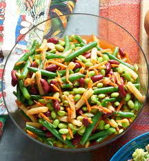

Sweet And Tangy Bean Salad

Let's Go Green
Sweet and Tangy Four Bean Salad is an old-fashioned potluck favorite that you probably remember your grandmother making. Beans, celery, red onion, and pimentos are marinated in a sweet and tangy dressing. This delicious recipe is the perfect make-ahead solution. Simply combine green beans, red kidney beans, soybeans and wax beans with a bold dressing of cider vinegar, dry red wine, mustard and garlic. Who doesn't love an easy three bean salad, perfect for summer picnics and potlucks?! This classic American picnic salad has cannellini beans, kidney beans, garbanzo beans, celery, red onion, parsley, and a sweet and sour dressing. This is a delicious salad-- I never really liked three-bean salad before this one! It's sweet and tangy at the same time and full of wonderful textures!
Ingredients
- 15 ounce(1 can) green beans, drained
- 15 ounce kidney beans, drained
- 1 can wax beans, drained
- 1 can corn kernels, drained
- 1 can sweet peas, drained
- 1 cup chopped celery
- 1 cup chopped onion
- 1 cup diced cucumber
- 1 cup chopped green bell pepper
- Three-quarter cup white vinegar(optional)
- 1 cup white sugar(optional)
- Half cup vegetable oil
- 1 teaspoon salt
Steps
- Mix green beans, kidney beans, wax beans, corn, sweet peas, celery, onion, cucumber, and green bell pepper together in a bowl.
- Stir (vinegar, sugar), vegetable oil and salt together in a saucepan. Bring to boil until sugar is dissolved, about 5 mins. Set aside to cool.
- Pour vinegar mixture over bean mixture, marinate in the refrigerator for at least 2 hours or overnight. Drain salad of extra marinade before serving.